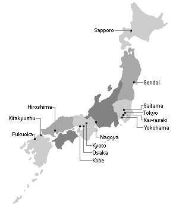

Emperor of Japan

Naruhito The Emperor of Japan
| Born | 23 February 1960, Tokyo |
|---|---|
| Reign | 1 May 2019 – present |
| Prime Minister | Shinzō Abe |
Largest cities of Japan by population
| City | Population | Square |
|---|---|---|
| Tokyo | 38,140,000 | 14,034 km2 |
| Yokohama | 3,700,000 | 437.38 km2 |
| Osaka | 2,668,586 | 223.00 km2 |
| Nagoya | 2,283,289 | 326.43 km2 |
| Sapporo | 1,957,914 | 1,121.26 km |
Basic information

- An island country in East Asia. Located in Pacific Ocean.
- Total area: 377,973 km2
- Population: 126,317,000
- Japan is the world's 4th largest island country and encompasses about 6,852 islands.
- The country is divided into 47 prefectures in eight regions